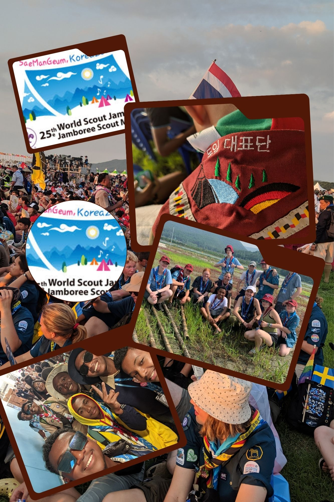

Chercheur d'aventure, j'eu été scout a FJKM Ambohimamory Antananarivo 84éme
Dés l'âge de 3ans, j'ai eu le loisir de franchir tous les grades du scoutisme en tant que Beazina ou jeune formé.
Louveteau, routier totémisé le 22 Juillet 2022 a Ambalavao sous le nom de: "Takilo Mahasaky" et actuellement routier, je vis pleinement ma vie scout en suivant ses principes et valeurs.
Le scoutisme est pour moi une source d'expérience enrichissante me procurant savoir vivre, vie sociale, maturité et esprit débrouillard me tractant vers l'avant

Grace au scoutisme, j'ai eu l'occasion de participer au World Scout Jamboree en 2023 en Corée du Sud
La diversité du monde fut époustouflante.La mise en évidence des valeurs, principes, perspectives durables dont de la cohésion m'as ouvert les yeux sur l'immensité ainsi que sur la beauté de ce monde mais surtout l'importance du mouvement lui même.
Les principes de bases du scoutisme tels que l'entraide se faisait ressentir rendant hommage au dernieres paroles de Lord Baden Powell:"Try and leave this world a little better than you found it"
Membre du World Global Warming Youth Group de 2022 a 2024, qui, est un groupe dédié aux jeunes africains conscients, débordants d'idées innovatrices et responsables de la planète. Ce fut une expérience enrichissante bien que bref réveillant mon sens de responsabilité et de respect pour la planéte